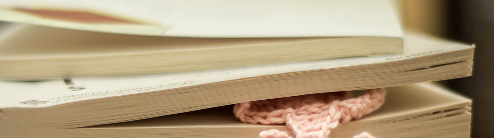

و ماقيمة القهوة إن لم تكن مُرّه؟
4 فبراير 2017
دوماً ما أتساءل ماقيمة القهوة إن لم تكن مُرّه؟
أحبها بمرارتها بحموضتها أحياناً و أيضاً دوماً ما أنساها فأشربها باردة!
في الحقيقة لساني ومعدتي بالنادر يتقبلوا الحلو من الطعم لذا لا مشكلة لديّ في مرارتها.
والدتي عكسي تماماً, عندما أرى كوب قهوتها مركون على الطاولة وهو ممتلئ أعلم أنّه مّرٌ.
أُضيف الحليب أحياناً لتجنب محاضرة والدي العزيز عن مضار القهوة السوداء بينما هو لابأس بأن يُكثر من الشاي.